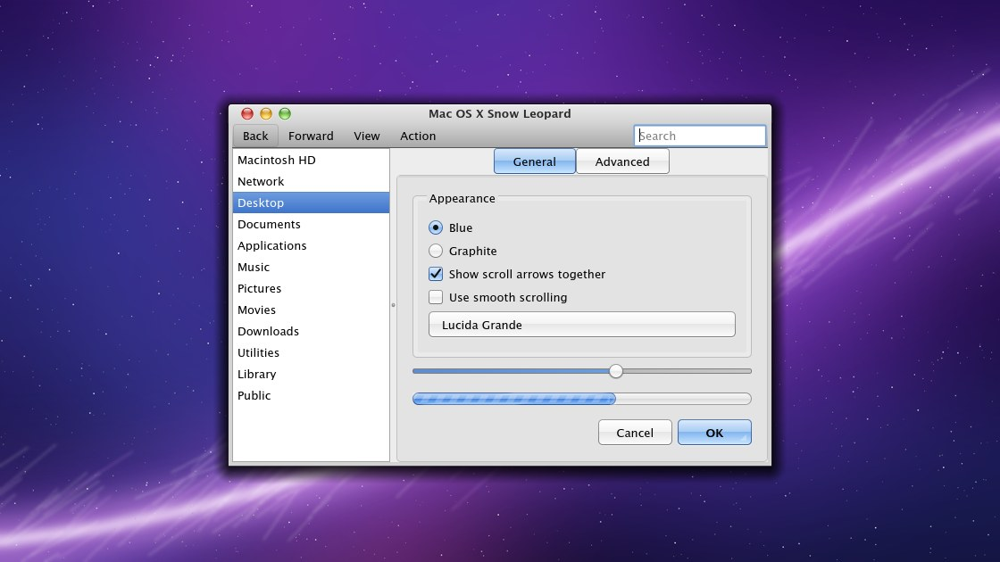

What's in each theme
Window frame
An Aurorae decoration with traffic-light buttons on the left, the period's title bar and a soft shadow.
Aqua widgets
A Kvantum style with glossy buttons, jelly or overlay scrollbars, barber-pole progress bars, and pinstriped, metal or unified toolbars.
Menu bar and dock
A Plasma style and layout with a global menu bar on top and a dock at the bottom, with a movable trash at the end.
Colours and wallpaper
A colour scheme sampled from period screenshots, plus an original generated wallpaper in that release's style.
Versions
| Version | Windows | Menu bar | Dock |
|---|---|---|---|
| 10.0 Cheetah, 10.1 Puma, 10.2 Jaguar | pinstripes, glossy Aqua, jelly scrollers | pinstriped white | flat, pinstriped, ▲ indicators |
| 10.3 Panther, 10.4 Tiger | brushed metal | glossy white | flat white, ▲ indicators |
| 10.5 Leopard | built from the Mac4Lin pack (bring your own) | translucent | glass shelf |
| 10.6 Snow Leopard | unified grey, glossy Aqua, jelly scrollers | translucent | glass shelf |
| 10.7 Lion, 10.8 Mountain Lion | unified grey, flatter buttons, overlay scrollbars | light grey | glass shelf |
| 10.9 Mavericks | as Lion, lighter | translucent | shallow frosted shelf |
Install
You need Plasma 6, Python with Pillow, librsvg, and Kvantum for the widgets. On Arch, all of these come from the official repositories:
sudo pacman -S kvantum python-pillow librsvg git clone https://github.com/DemuthPetr/snow-leopard-plasma.git cd snow-leopard-plasma ./install.sh && ./install-versions.sh ./apply-version.sh tiger # or cheetah … mavericks ./apply-version.sh snowleopard --reset-layout # also sets up the menu bar and dock
Then choose kvantum under System Settings › Colours & Themes › Application Style, and restart your apps.
For Leopard, download Mac4Lin_Install_v1.0.zip from
SourceForge, put it in vendor/, and run
./install-mac4lin.sh. That also adds classic icons, cursors, sounds and Lucida Grande to every version.